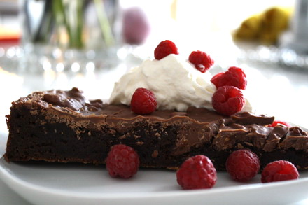

Kladdig kladdkaka
En riktigt kladdig kladdkaka täckt med smält choklad, mums!

Ingredienser
200 g mjölkchoklad
4 ägg
2 tsk vaniljsocker
2 krm salt
5 dl strösocker
1 dl kakao
3 dl vetemjöl
225 g smör
--
Gör så här:
Sätt ugnen på 175°
Smörj och bröa en form
Smält smöret och låt svalna
Vispa ihop socker och ägg poröst
Tillsätt vaniljsocker, kakao och salt
Rör om i smeten och blanda i mjölet
samtidigt
Häll smeten i formen
Grädda kakan i cirka 35 minuter. Kakan
skall vara lös i mitten men fast i kanterna
när den är klar.
Bryt chokladen i bitar och smält i ett vattenbad
Häll chokladen över den färdiga kakan och låt stelna
Servera gärna med grädde och bär :)